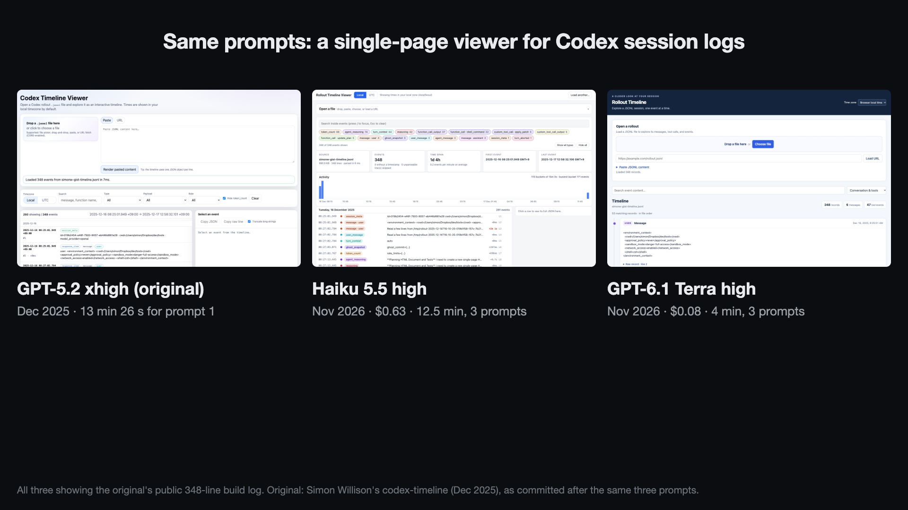

A NES emulator and a log viewer from late 2025, rerun on Haiku 5.5 and GPT‑6.1 Terra
November 2026. Two things GPT-5-family models built as coding agents at the end of 2025, given again with the same prompts to two cheap models. The emulators are graded on public test ROMs.
A NES emulator in C, from one spec
In October 2025 a Reddit user asked ChatGPT to write a prompt for "a Nintendo NES emulator in clean, portable C", a 230-word spec covering the CPU, picture, sound, controllers and five cartridge types. Codex CLI with GPT-5-Codex on medium built it in one go: "25 min", using a quarter of a Plus plan's 5-hour limit. The author's verdict: "games are playable but with some graphic glitches". No games or test results were named.
I gave the same spec, word for word, to Haiku 5.5 and GPT-6.1 Terra in an empty folder. One prompt each, no follow-ups.
| GPT-5-Codex (Oct 2025) | Haiku 5.5 high | GPT‑6.1 Terra high | |
|---|---|---|---|
| Time | 25 min (author) | 21 min 46 s | 6 min 0 s |
| Cost | not published | $0.69 | $0.11 |
| C code, without tests | 4,080 lines | 3,126 lines | 167 very long lines (30 KB) |
| Test ROMs that report their own result (64) | 13 | 28 | 24 |
| Test ROMs that only show a result on screen (20) | 2 | 16 | 18 |
| All 84 test ROMs | 15 | 44 | 42 |
| What it said at the end | "playable but with some graphic glitches" | built and self-tested, never ran a real ROM, suggested test ROMs next | "a foundation", accuracy and game compatibility "not yet established" |
By test group
| Group | Original | Haiku | Terra |
|---|---|---|---|
| CPU instructions (instr_test-v5) | 9/16 | 15/16 | 14/16 |
| CPU and branch timing (instr_timing, branch timing, cpu_timing_test6) | 0/6 | 4/6 | 6/6 |
| Sprite 0 hit (2005 set) | 1/11 | 8/11 | 11/11 |
| Vertical blank and NMI (ppu_vbl_nmi) | 0/10 | 4/10 | 3/10 |
| PPU basics (2005 set) | 1/5 | 4/5 | 3/5 |
| Sound (apu_test) | 1/8 | 4/8 | 1/8 |
| MMC3 cartridge (mmc3_test_2) | 0/6 | 0/6 | 0/6 |
| Interrupts (cpu_interrupts_v2) | 0/5 | 0/5 | 0/5 |
| Other (dummy reads and writes, reset, OAM, open bus, DMA) | 3/17 | 5/17 | 4/17 |
Things worth knowing
- The video is Blade Buster, a free homebrew shooter, with the same button presses on all three. Each frame comes from the emulator's own code run headless. The original draws most of the background as black, and its title screen comes out on white with broken letters. Haiku and Terra draw it almost the same way.
- The test ROMs are the public collection most emulator authors use (blargg's tests and others, from christopherpow/nes-test-roms). The models had none of them, and no ROMs at all. For the 20 that only show text on screen, I read the last frame myself. The original draws that text with letters missing, so I could read only some of its results, and counted the unreadable ones as not passed.
- The grader is my own small runner. It links each emulator's code through an adapter that calls the emulator's own functions, set up the way its own main program does it. I checked that changing the original's startup to match its main program exactly changes no result and no frame.
- A passed test ROM checks one behaviour. These counts don't say how many commercial games run. I didn't try commercial games.
- Terra's code is 167 lines because most lines hold many statements. The prompt asked for "clean" code. Haiku's is split into normal files and functions.
- The original's author used Codex CLI on medium, and Plus usage isn't a dollar figure, so there's no cost to compare.
A viewer for Codex session logs, in three prompts

In December 2025 Simon Willison, a developer who writes a widely read blog on AI tools, had GPT-5.2 on xhigh in Codex CLI build a page that shows a Codex session log as a timeline. He published the whole session log. The first prompt asked for one HTML file with no React that opens a log by paste, file picker, drag and drop or URL, shows times in local time with a UTC toggle, and is tested with Playwright against a 9 MB log while it's built. Two short follow-ups came the next day: make it full width with the filters under the file opener (with a screenshot), and make the details panel on the right sticky.
I sent the same three prompts to Haiku 5.5 and Terra, in his tools repository as it was just before he started. With the second prompt each model got a screenshot of its own page, as he had sent one of his.
| GPT‑5.2 xhigh (Dec 2025) | Haiku 5.5 high | GPT‑6.1 Terra high | |
|---|---|---|---|
| First prompt | 13 min 26 s | 9 min 31 s | 2 min 31 s |
| All three prompts | (a day apart) | 12 min 31 s, $0.63 | 3 min 46 s, $0.08 |
| Opens the 9 MB log, local/UTC toggle, four ways to load | yes | yes | yes |
| Playwright tests against the 9 MB log | yes | yes, 14 tests kept in the repo | yes, but the test file went to /tmp and wasn't kept |
| Third prompt: sticky details panel on the right | done | had no such panel, built one and said so | had no such panel, asked which panel was meant, changed nothing |
Things worth knowing
- The 9 MB log from the original prompt was never published. I used the first 9 MB of one of my own Codex logs, under the same file name and path. It's private, so the image and the pages here use his public 348-line log instead.
- The original's time is from his log. His page is the first commit of it, made after the three prompts. It may include edits of his own, which the log wouldn't show.
- Haiku added things nobody asked for: an activity chart, event type chips with counts, gap highlighting, loading from
?url=and arrow-key navigation. Terra's page is plain and does what the first prompt lists. - Terra named its file rollout-timeline.html, the same name GPT-5.2 first gave its file. The test log is named rollout-….jsonl, which probably explains both.
How this was run
- Haiku ran in Claude Code (
claude-haiku-5-5, effort high). Terra ran in Codex CLI (gpt-6.1-terra, reasoning high). Each ran in its own Docker container with no approvals and no sandbox inside it, as both originals ran on their authors' own machines. - Unlike my JSONata and Z80 reruns, these containers had internet, since both originals did. I checked every command in all four runs: none fetched anything, and neither model used a web tool.
- Both originals are public, so the new models may have seen them in training.
- One run per model and task. That's enough to see what happened, not to rank models.
- Costs are the tokens each run used at the provider's API list price. I ran them on subscriptions, so nothing was charged.